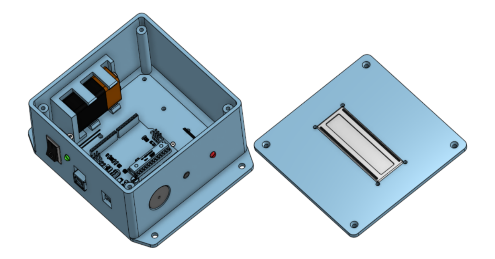
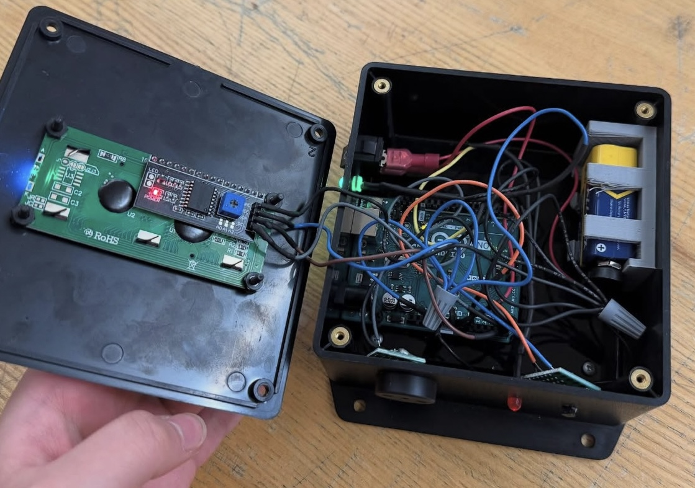

Embedded Systems & CAD
Temperature Sensor
A smart monitoring device providing audio and visual alerts when temperature drift outside the 70°F - 75°F range.
Arduino IDE
Onshape
Circuit Design
3D Printing
Analog-to-Digital Conversion
Soldering
Infill Optimization
Sep-Dec 2024

Design & Iteration
The core design challenge was the 9V battery housing. I engineered a vertical snap-fit holder using a zigzag infill pattern. This specific manufacturing choice provided the necessary compliance in the arms for battery insertion while maintaining a rigid structural base.

Digital Assembly & Tolerancing

Internal Layout & Soldering